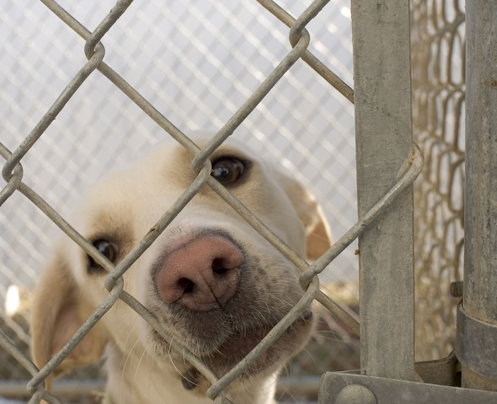

Animal shelter.
An animal shelter or pound is a place where stray, lost, abandoned or surrendered animals mostly dogs and cats are housed. The word pound has its origins in the animal pounds of agricultural communities, where stray livestock would be penned or impounded until they were claimed by their owner
